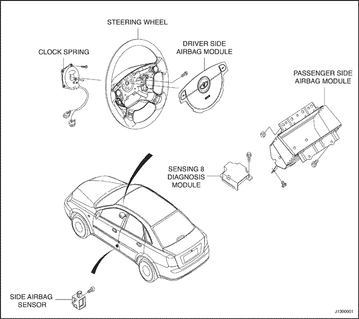

AVISO DE SERVICIO
COMO UTILIZAR ESTE MANUAL
Este manual incluye las reparaciones de los vehículos NUBIRA/LACETTI que se hayan visto envueltos en accidentes y describe el trabajo relacionado con la sustitución de partes dañadas de la carrocería.
Lea detenidamente estas instrucciones y familiarícese con ellas antes de usar realmente este manual.
Nota: Consulte el Manual de servicio del modelo NUBIRA/LACETTI para obtener detalles sobre las especificaciones, ubicación de los cables de conexión, puntos de apoyo del soporte de seguridad, etc.
INFORMACIÓN ESPECIAL
Advertencia: Indica un elevada posibilidad de lesiones personales o daños a los equipos en caso de no seguir las instrucciones.
Nota: Ofrece información útil.
Precaución: Descripciones en detalle de procedimientos estándar de taller, no se incluyen principios de seguridad y operaciones de servicio. Observe que este manual no contiene advertencias y avisos contra métodos específicos de servicio que podrían provocar LESIONES PERSONALES, o que podrían dañar un vehículo o hacerlo inseguro. Entienda que estas advertencias no pueden tratar todas las formas concebibles en las que el servicio, tanto si es o no el recomendado por GM DAEWOO, podría realizarse, ni puede advertir de todas las consecuencias peligrosas de cada una de dichas formas, no pudiendo si quiera GM DAEWOO investigarlas todas ellas. Todo aquel que emplee procedimientos o herramientas de servicio, tanto si son los recomendados por GM DAEWOO como si no lo fueran, deben cerciorarse ellos mismos de que no se pondrá en peligro ni la seguridad personal ni la de las herramientas.
Toda la información incluida en este manual se basa en la última información de producto disponible en el momento de la impresión del manual. Nos reservamos el derecho de introducir modificaciones en cualquier momento y sin previo aviso. Ninguna parte de esta publicación puede reproducirse, almacenarse en sistemas de recuperación, o transmitirse, en forma o medio alguno ya sea electrónico, mecánico, fotocopia, grabación u otros, sin el permiso previo por escrito del editor. Esto incluye texto, figuras y tablas.
SISTEMA DE RETENCIÓN SUPLEMENTARIO (SRS)
Aviso: Deben observarse las siguientes precauciones al realizare trabajos de chapistería, pintura y reparación alrededor de la ubicación de las piezas del sistema SRS.
- El SDM (Sensing and Diagnosis Module, Módulo de detección y diagnóstico) se sitúa debajo del conjunto de la consola central. Evite el impacto fuerte con el conjunto al usar el martillo u otras herramientas al reparar el bastidor lateral delantero y la parte inferior del salpicadero. No aplique calor a estas zonas con un quemador de gas, etc.
- El cable de conexión del SRS se sitúa debajo de la parte inferior del salpicadero, por debajo del panel del mismo. (El cable de conexión del SRS está cubierto por tubo coarrugado amarillo). Cuando realice reparaciones en esta zona debe tenerse cuidado de no dañar el cable de conexión.
- No aplique calor superior a 80°C (176°F) cuando seque superficies pintadas en las cercanías de las piezas del sistema SRS.
- Si fuera necesario aplicar un fuerte golpe o alta temperatura en las zonas cercanas a las piezas del sistema SRS, quite la pieza antes de realizar el trabajo de reparación.
- Si alguna de las piezas relacionadas con el SRS resulta dañada o deformada, asegúrese de sustituirla.
Nota: Consulte el Manual de servicio (Sistema de retención suplementario) para saber cómo quitar y sustituir las piezas relacionadas con dicho sistema SRS.
